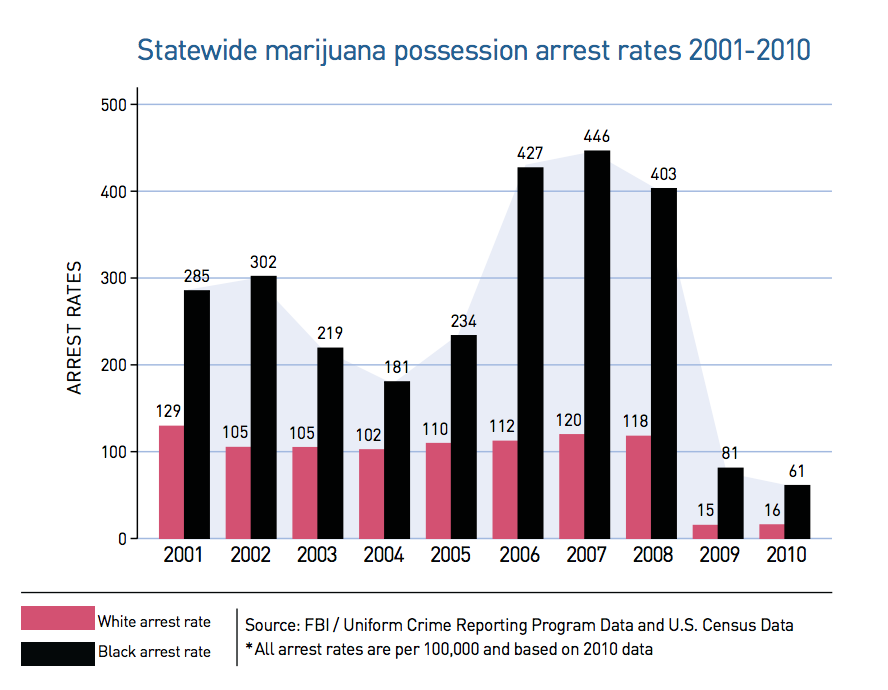
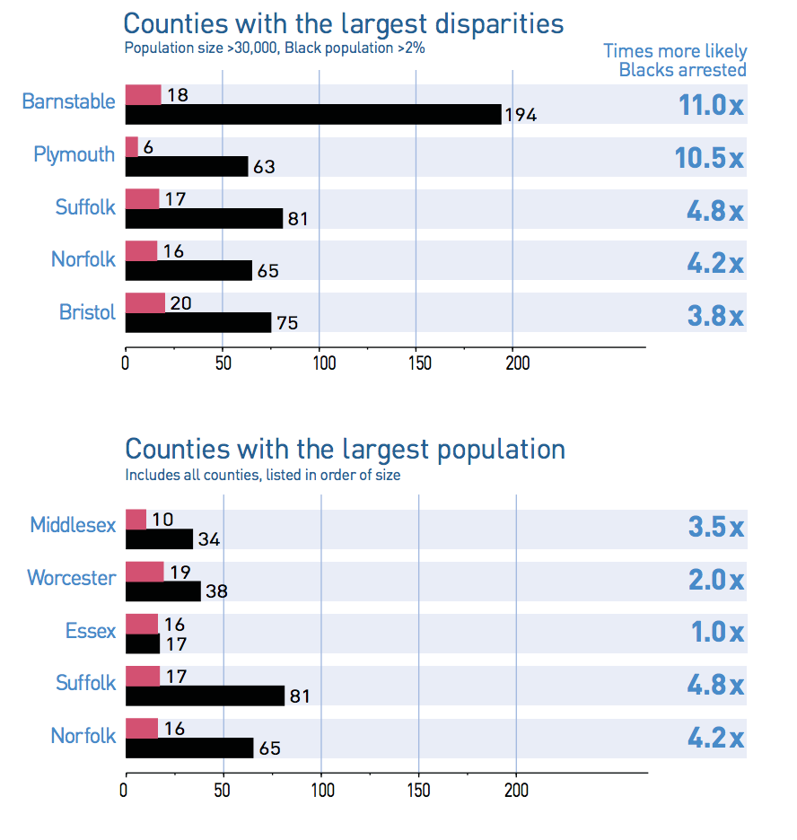
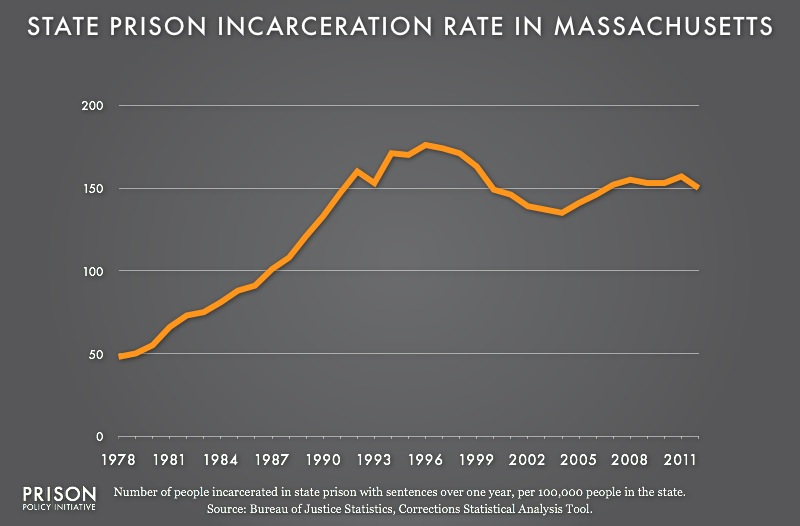
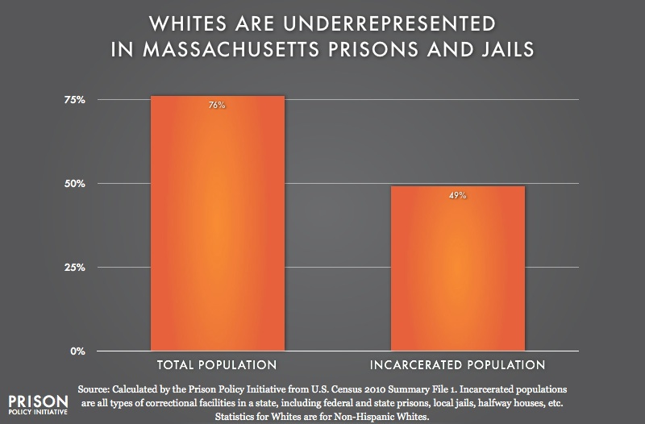
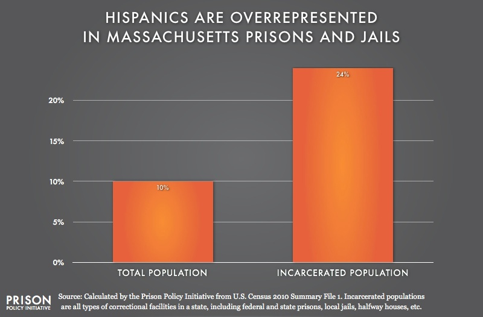
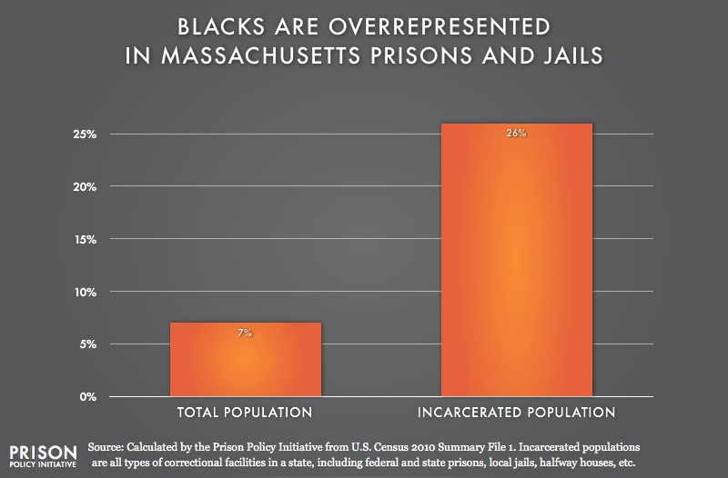

Of those, 47% are white.
excl. white hispanics or latinos
24.4% are black.
and 28.8% are other people of color.
incl. white hispanics or latinos
As you can see, the city has a segregation problem. Unfortunately, it’s not just that people are separated along stark, racial lines. We also have an inequality problem.
One way to look at inequality in our city is through the lens of policing, and in particular, policing related to drugs.
In Boston, as elsewhere in the country, most police work relates to our decades old, failed, costly drug prohibition policy. Using data from the City of Boston’s open data portal, combined with census data showing racial segregation, we are able to map how Boston police officers fight the drug war in our city. The results are striking, and call for action.
As you can see on the map, the vast majority of drug investigations and arrests occur in neighborhoods where people of color live. The whiter areas of the city see far less drug war policing.
Why is that? Do white people use and sell drugs at lower rates than people of color? Not so fast.
According to the Brookings Institution, a Washington D.C. think tank, white people nationwide use and sell drugs at rates equal to or higher than their Black and brown neighbors.
Whites were about 45 percent more likely than blacks to sell drugs in 1980, according to an analysis of the National Longitudinal Survey of Youth by economist Robert Fairlie. This was consistent with a 1989 survey of youth in Boston. [Brookings analysis] of data from the 2012 National Survey on Drug Use and Health shows that 6.6 percent of white adolescents and young adults (aged 12 to 25) sold drugs, compared to just 5.0 percent of blacks (a 32 percent difference).
Racial disparities have been documented at every step of the criminal punishment system: From street level stop & frisks, to arrests, to bail, to charging, to pleas & conviction, to sentencing, to incarceration, and finally, to probation & parole.
Marijuana arrests   In 2010, while Black people only made up 7.7% of the population in Massachusetts, they accounted for over 25% of marijuana possession arrests. That year, Black people were nearly 4x more likely to be arrested for marijuana possession than whites. source
    source
What explains these racial disparities in policing?
When it comes to the drug war, one reason might surprise you: the survivability of drug prohibition itself.
In his book CHASING THE SCREAM, journalist Johann Hari set out to understand why police target Black and brown people in the war on drugs, much more than they do white people, even though whites use and sell drugs at the same or even higher rates. So he put the question to a police officer named Matthew Fogg.
Matthew Fogg is one of the most decorated police officers in the United States, responsible for tracking down more than three hundred of the most-wanted felons in the country—from murderers to rapists to child molesters. But he was bewildered as to why his force only ever goes to black neighborhoods to bust people for drugs. He went to see his boss to suggest they start mounting similar raids in white neighborhoods.
He explained that his superior officer told him:
“Fogg, you know you’re right they are using drugs there [but] you know what? If we go out and we start targeting those individuals, they know judges, they know lawyers, they know politicians, they know all of the big folks in government. If we start targeting them, and their children, you know what’s going to happen? We’re going to get a phone call and they’re going to shut us down. You know that, Fogg? You know what’s going to happen? There goes your overtime. There’s the money that you’re making. So let’s just go after the weakest link. Let’s go after those who can’t afford the attorneys, those who we can lock up.”